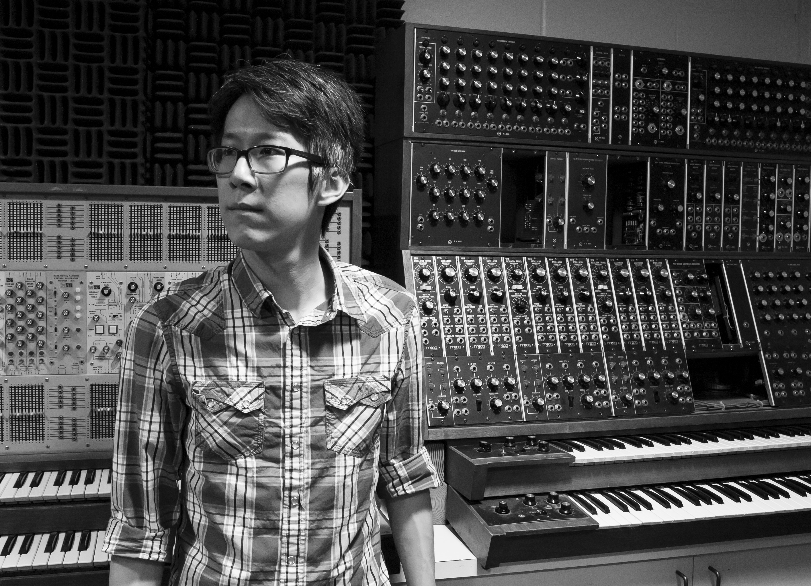

Bio

The music of Chin Ting (Patrick) CHAN (b. 1986) stems from an interest in representing his impressions of the visual world with sonic images. It is often inspired by patterns and shapes he discovers in daily objects, as well as imaginary landscapes he sometimes encounters. These abstract concepts are projected to a music that is characterized by complex harmonic progressions within a multi-layered texture.
Chan has been a fellow and guest composer at the International Computer Music Conference, the International Rostrum of Composers, IRCAM’s ManiFeste, June in Buffalo and the Wellesley Composers Conference, and has held residencies with the Charlotte Street Foundation and the Virginia Center for the Creative Arts. He has received commissions from the Hong Kong Composers' Guild and the Music Teachers National Association, as well as performances by Ensemble Signal, the Nouveau Classical Project and the S.E.M. Ensemble, in venues such as the Darmstadt State Theatre and the Seoul Arts Center, among many others. Awards and other recognition include those from the Interdisciplinary Festival for Music and Sound Art, the Soli fan tutti Composition Prize, the American Prize, ArtsKC, ASCAP, Association for the Promotion of New Music, the Cortona Sessions for New Music, Foundation Destellos, Foundation for Modern Music, the MidAmerican Center for Contemporary Music, newEar, the New-Music Consortium, the Portland Chamber Music Festival, the RED NOTE New Music Festival and others.
Raised in Hong Kong, Chan has held faculty positions at the University of Missouri–Kansas City and Kansas City Kansas Community College. He holds degrees from San José State University (B.M.), Bowling Green State University (M.M.) and the University of Missouri–Kansas City (D.M.A.). His works are published with the ABLAZE Records, Darling’s Acoustical Delight, Melos Music, Music from SEAMUS, Navona Records/PARMA Recordings, the SCI Journal of Music Scores and Unfolding Music Publishing (ASCAP).
short version
Raised in Hong Kong, composer Chin Ting (Patrick) CHAN has held faculty positions at the University of Missouri–Kansas City and Kansas City Kansas Community College. His music has been featured throughout the North and South Americas, Europe and Asia; at festivals such as the International Computer Music Conference, the International Rostrum of Composers, IRCAM’s ManiFeste, June in Buffalo and the Wellesley Composers Conference, among many others.
中文版
香港作曲家陳展霆(Patrick)，其音樂作品著重於以聲音表達抽象視覺形式，以不同的角度探討及展現兩種感官的關聯。他的創作範疇涉獵甚廣，除了發表大小型室樂及管弦樂作品外，亦致力參與電子音樂及聲響設計的創作和研究，且屢獲殊榮，曾認可於維也納跨學科音樂節、Soli fan tutti作曲獎、美利堅獎、現代音樂協會、香港作曲家聯會、中美現代音樂中心、新耳現代室內樂團、新音樂會社、波特蘭室內音樂節、紅音符新音樂節、科爾托納新音樂會議、APNM、ASCAP、Foundation Destellos、MMTA/MTNA、VCCA，以及在世界各地演出，包括美國、加拿大、墨西哥、巴西、奥地利、德國、法國、意大利、葡萄牙、希臘、韓國、新加坡和香港。他也曾獲邀參與多個國際重要音樂節，當中包括國際電腦音樂會議、國際作曲家論壇、六月在水牛城及維斯理作曲家會議，更曾於2013年遠赴巴黎參與IRCAM舉辦的ManiFeste，協助著名意大利作曲家Mauro Lanza編寫互動聲響程式。
陳氏曾任教於密蘇里大學(堪薩斯城分校)及堪薩斯城堪薩斯社區學院。他曾就讀於聖荷西州立大學及鮑林格林州立大學，2014年於密蘇里大學(堪薩斯城分校)獲取音樂博士，在學期間曾師從著名作曲家陳怡、周龍、James Mobberley、Paul Rudy、Marilyn Shrude、Burton Beerman、Andrea Reinkemeyer、Brian Belet和Pablo Furman.